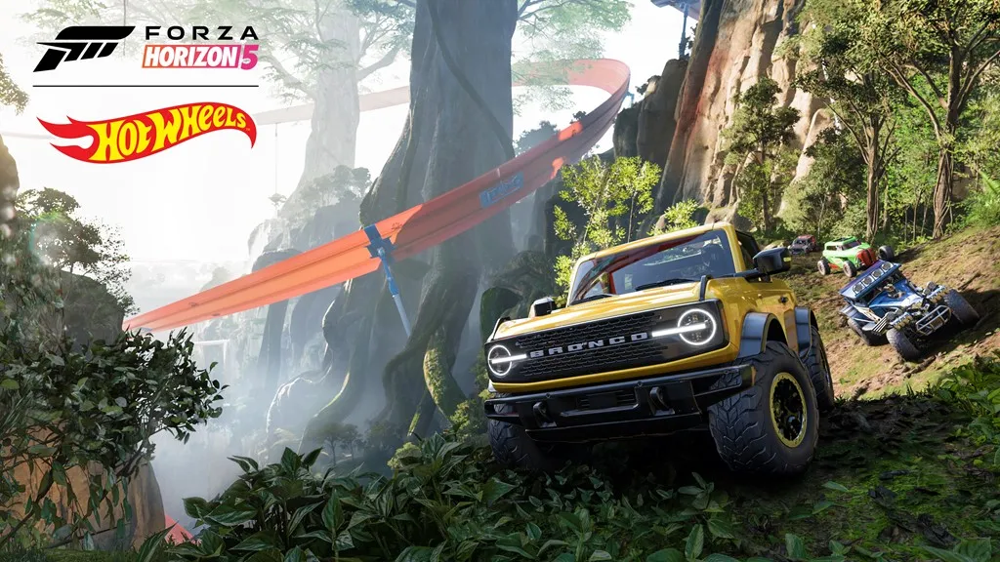

A tão aguardada sequência da popular franquia de corrida, Forza Horizon 5, finalmente chegou para levar os fãs a uma experiência de jogo como nenhuma outra. Com gráficos impressionantes e detalhes de tirar o fôlego, o jogo transporta os jogadores para cenários incríveis, desde praias ensolaradas até selvas exuberantes, passando por cidades vibrantes e desertos imensos.
Com uma vasta variedade de carros, desde supercarros de última geração até clássicos amados, os jogadores têm a oportunidade de personalizar e aprimorar seus veículos para se adequar ao estilo de corrida deles. A mecânica de direção realista e a jogabilidade envolvente garantem uma experiência autêntica de corrida.

Forza Horizon 5 também introduz um modo de história envolvente, onde os jogadores participam de um festival de corrida épico, explorando o vasto mundo aberto e competindo em uma ampla gama de eventos desafiadores. Com recursos online aprimorados, como o modo de mundo compartilhado, os jogadores podem se conectar, competir e colaborar com outros jogadores em uma experiência verdadeiramente social.
Se você é um entusiasta de corridas ou apenas alguém que aprecia cenários deslumbrantes e adrenalina, Forza Horizon 5 promete entregar uma dose emocionante de diversão automotiva. Prepare-se para acelerar em estradas desafiadoras e descobrir um mundo virtual impressionante, tudo na ponta dos seus dedos.